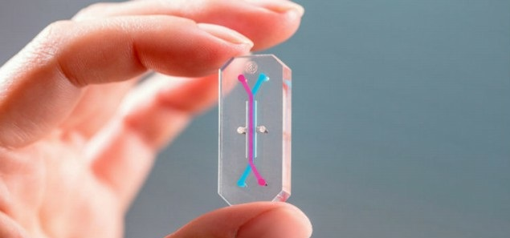

Emulate
Microfluidics start-ups working on organ-on-chip technology: Emulate is a US start-up, well-known to have come up with the first organs-on-chips. Their main goal is to develop microfluidic chips to understand how diseases, drugs, chemicals and food affect our health. The start-up was created in the labs of the Wyss Institute for Biologically Inspired Engineering in Harvard. After developing many organs-on-chip (such as lungs-on-chip, gut-on-chip and even blood-brain-barrier-on-chip), Emulate is now researching personalized medicine.